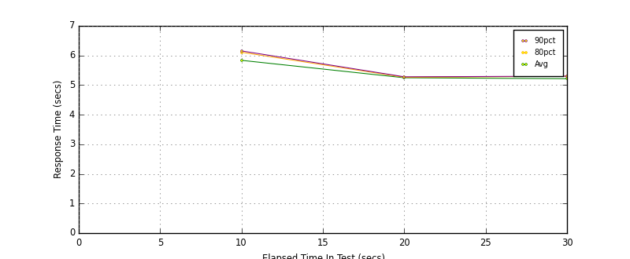
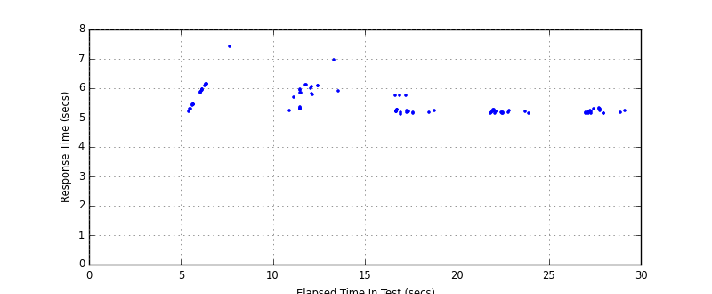
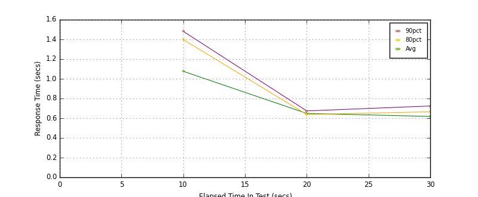
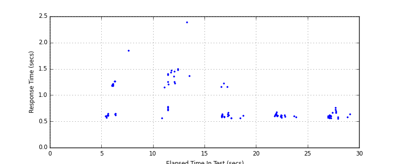
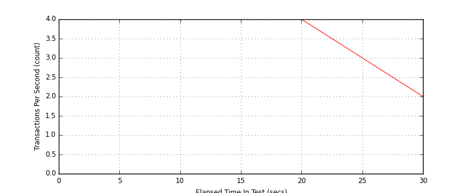
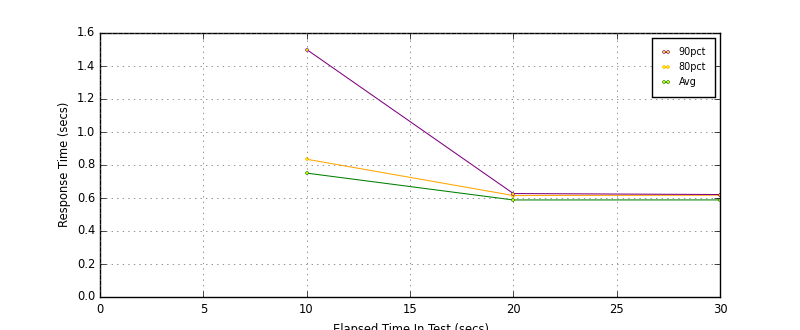
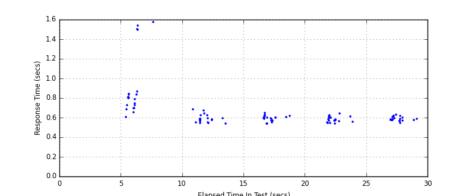

Performance Results Report
Summary
transactions: 120
errors: 0
run time: 30 secs
rampup: 0 secs
test start: 2014-11-04 19:53:18
test finish: 2014-11-04 19:53:42
time-series interval: 10 secs
workload configuration:
| group name | threads | script name |
|---|
| user_group-1 | 10 | v_user.py |
| user_group-2 | 10 | v_user.py |
All Transactions
Transaction Response Summary (secs)
| count | min | avg | 80pct | 90pct | 95pct | max | stdev |
|---|
| 120 | 5.132 | 5.477 | 5.902 | 6.079 | 6.147 | 7.429 | 0.420 |
Interval Details (secs)
| interval | count | rate | min | avg | 80pct | 90pct | 95pct | max | stdev |
|---|
| 1 | 40 | 4.00 | 5.218 | 5.837 | 6.110 | 6.155 | 6.983 | 7.429 | 0.449 |
| 2 | 40 | 4.00 | 5.132 | 5.249 | 5.264 | 5.281 | 5.763 | 5.770 | 0.153 |
| 3 | 20 | 2.00 | 5.150 | 5.217 | 5.299 | 5.302 | 5.339 | 5.339 | 0.059 |
Graphs
Response Time: 10 sec time-series

Response Time: raw data (all points)

Throughput: 5 sec time-series

Custom Timer: Delete
Timer Summary (secs)
| count | min | avg | 80pct | 90pct | 95pct | max | stdev |
|---|
| 100 | 0.549 | 0.814 | 1.199 | 1.367 | 1.470 | 2.383 | 0.353 |
Interval Details (secs)
| interval | count | rate | min | avg | 80pct | 90pct | 95pct | max | stdev |
|---|
| 1 | 40 | 4.00 | 0.562 | 1.076 | 1.398 | 1.482 | 1.843 | 2.383 | 0.415 |
| 2 | 40 | 4.00 | 0.556 | 0.649 | 0.638 | 0.674 | 1.160 | 1.220 | 0.155 |
| 3 | 20 | 2.00 | 0.549 | 0.618 | 0.665 | 0.724 | 0.762 | 0.762 | 0.059 |
Graphs
Response Time: 10 sec time-series

Response Time: raw data (all points)

Throughput: 10 sec time-series

Custom Timer: Load_Front_Page
Timer Summary (secs)
| count | min | avg | 80pct | 90pct | 95pct | max | stdev |
|---|
| 100 | 0.538 | 0.653 | 0.673 | 0.803 | 0.867 | 1.577 | 0.195 |
Interval Details (secs)
| interval | count | rate | min | avg | 80pct | 90pct | 95pct | max | stdev |
|---|
| 1 | 40 | 4.00 | 0.538 | 0.751 | 0.835 | 1.500 | 1.539 | 1.577 | 0.281 |
| 2 | 40 | 4.00 | 0.541 | 0.588 | 0.615 | 0.627 | 0.642 | 0.651 | 0.028 |
| 3 | 20 | 2.00 | 0.546 | 0.588 | 0.617 | 0.621 | 0.628 | 0.628 | 0.021 |
Graphs
Response Time: 10 sec time-series

Response Time: raw data (all points)

Throughput: 10 sec time-series